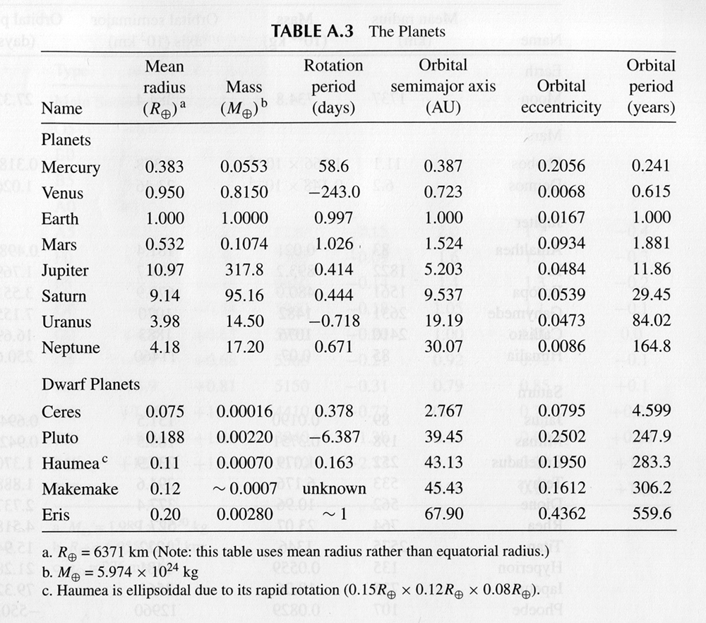
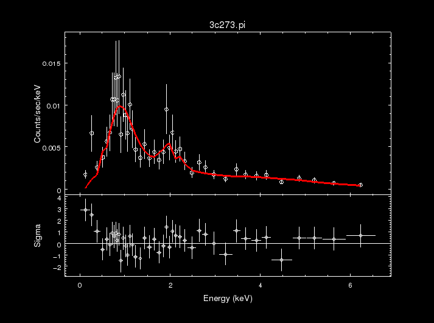

Coding is widely used in astronomy, especially by astrophysicists. It makes interpreting data and drawing conclusions from it a lot more easier.
Here are a few places coding is used by astrophysicists:
Astronomers have to check the images of the universe taken by the telescope and
have to correct the "noise" that is coming from the images, which is the light
that is not needed and is disturbing the image.
Now there are a tons of images
that are recieved by astronomers, therefore, correcting all those images by their own
hands is a very tedious task.
Hence, coding is used wherein a command is fed to the
computer/ system and it corrects all those images, making the interpretation of the
images a lot more easier later on.
Once the image is rectified, scientists need to interpret it and collect useful data. Like what can be the size of the galaxy, colour of it, new star formation in it. However, they get millions of galaxies to interpret, and collecting such properties/data is very difficult to do for each of them. Therefore, again coding is used to give a command to the computer which can analyse the images/data given to them.
Once the data is analysed, it is helpful to draw conclusions from it. But, since there is countless of data from which the conclusions are needed to be made from, it can be hard for one to look at all the data collected by the computer. Thus, a command is provided to the computer through coding and it creates graphs and models out of the data which helps the astrophysicists to draw conclusions and predict future events.
